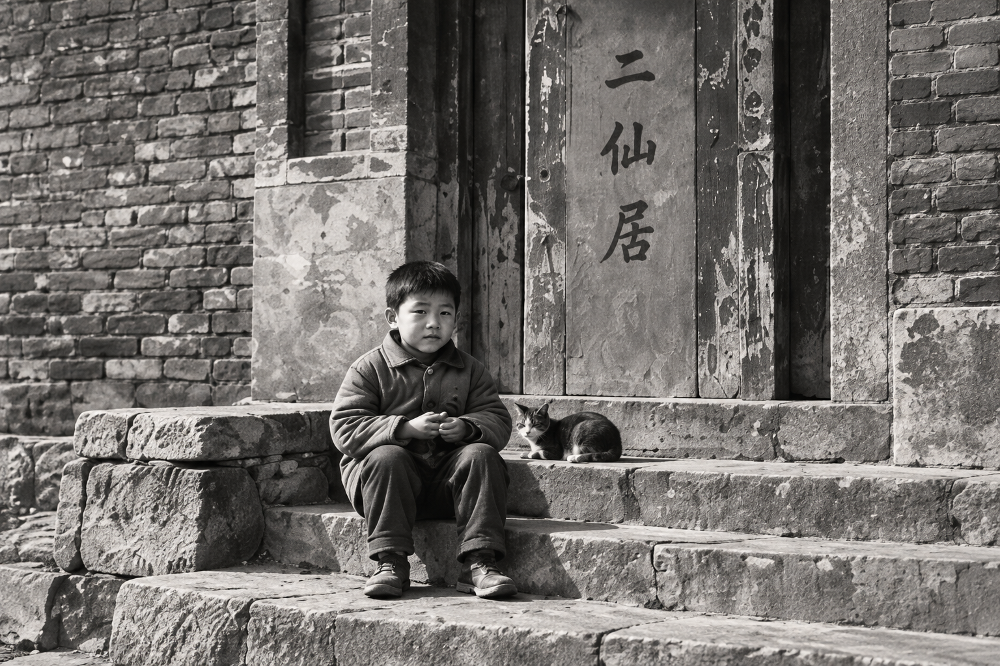

一座城，总有让人惦念的地方。
中国 · 承德
记下二仙居的旧时光，也看看今天的烟火日常。
老城记忆 / 01
有些路，走过多少次，依然会想起。
市井烟火 / 02
一日三餐里，藏着最真实的故乡。
街巷漫步 / 03
熟悉的街巷，总有新的遇见。

关于二仙居
从儿时走过的街巷，到今天想留下的故事。这里是二仙居，也是我的故乡。
离避暑山庄不远的这片街区，装着许多承德人的日常。想把它慢慢记下来：一座桥、一条街、一段生活，也留给愿意停下来看看的人。